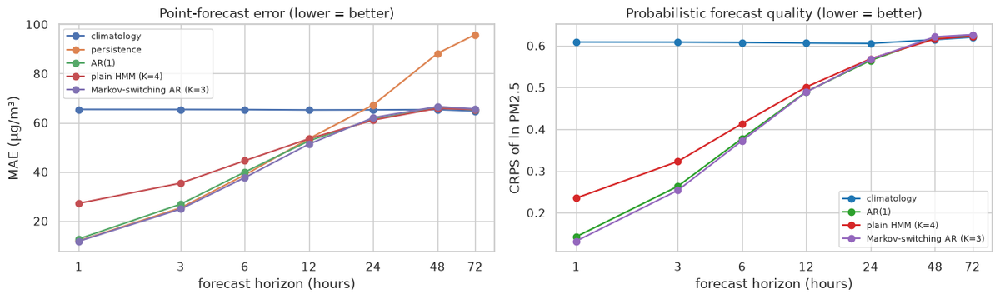
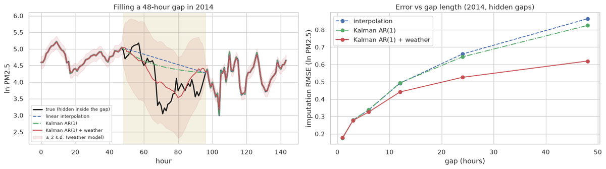

Practice tasks covered
- Practice 1 – HMM on daily air-quality classes and on daily / hourly ln PM2.5: hidden regimes and forecasts
- Extra – Markov-switching AR and a Kalman filter with weather inputs
Forecasting the next hours

About 7% lower error than AR(1) at 1 hour. Beyond roughly 12 hours all the good models are equal.
Filling a gap with a Kalman filter

| Gap length | Kalman + weather vs. interpolation |
|---|---|
| 12 hours | about 10% lower error |
| 24 hours | about 20% lower error |
| 48 hours | about 28% lower error |
Run the code
This is real Python running in your browser: a Gaussian HMM written from scratch (forward-backward, Baum-Welch, Viterbi) on daily ln PM2.5. Edit it and press Run. The first run takes a little while to load Python.
week_4.pyPython · runs in your browser